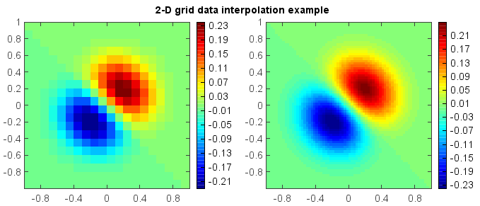

RectBivariateSpline¶
- class numeric.interpolate.RectBivariateSpline(object)¶
Bivariate spline approximation over a rectangular mesh.
Can be used for both smoothing and interpolating data.
- Parameters:
x – (array_like) 1-D arrays of x coordinate in strictly ascending order.
y – (array_like) 1-D arrays of y coordinate in strictly ascending order.
z – (array_like) 2-D array of data with shape (x.size,y.size).
Examples:
from mipylib.numeric import interpolate x, y = meshgrid(linspace(-1, 1, 20), linspace(-1, 1, 20)) z = (x+y) * exp(-6.0*(x*x+y*y)) f = interpolate.RectBivariateSpline(x[0,:], y[:,0], z) subplot(1,2,1) im = imshow(x[0,:], y[:,0], z, 40) colorbar(im) xnew, ynew = meshgrid(linspace(-1, 1, 70), linspace(-1, 1, 70)) znew = f(xnew, ynew) subplot(1,2,2) im = imshow(xnew[0,:], ynew[:,0], znew, 40) colorbar(im) suptitle('2-D grid data interpolation example')
